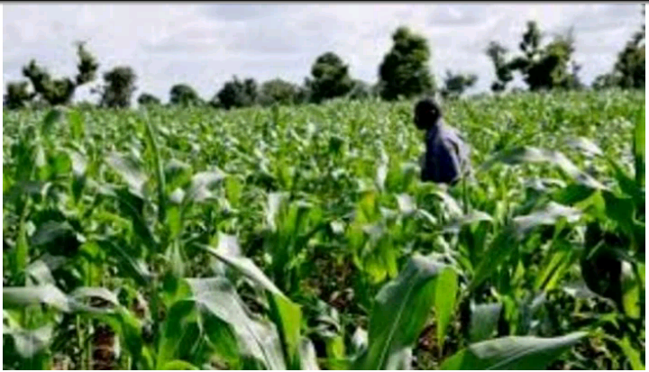
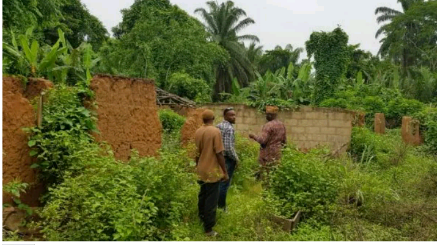

The soil of Iwa LCDA/region belongs to a major group called the tropical Ferruginous soil. The soil generally have low nutrient holding capacity due to their location and with exchange capacities of between 5.0 and 12.0 millimeter- equivalent per 100 grain of dry soil (Aweto, 1994). Iwa Local Development Area enjoys the West African Monsoonal climatic type marked by two distinct seasons. The raining Season occurs between March and October when the moist monsoonal wind from the Atlantic Ocean blows over the region. On the other hand, the area experiences, dry seasons between November and February due to the influence of the dry, dust-laden north-east trade winds from the Sahara desert (Emielu, 2000).
However, monthly and yearly values of rainfall generally fluctuate. For instance, a value of 15Imm was recorded for the month of April, 1997 while the month of August, 2011 recorded 187.5mm (NMS, 2011, cited in OYSG, 2011).  The mean temperatures are highest at the end of thee harmattan (averaging 28C), that is from the middle of November to the onset of the rains in the middle of March. Even during the rainfall months, average temperatures are relatively high, between 24C and 25°C, while annual fluctuation of temperature is about 6°C (OYSG, 2011). Geographically, the Iwa LCDA is bounded by the Kajola Local Government Area, Itesiwaju local Government Area, 1ganna LCDA, 1ganna and Iwajowa Local Government Area. Also, Iwa Local Council Development Area is located at the suburb area in Oke-Ogun region with Its administrative headquarters located at llero and other major towns are Ayetoro, Iwere-Oke and Ilaji-Oke which are surrounded by many villages.
Officially, the actual demarcation between Iwa Local Council Development Area and Kajola Local Government Area is still being worked upon by the office of Surveyor General of Oyo State as at the time of writing this book.In 1979, Kajola and what later became Iwajowa Local Government, in 1997, existed as one Local Government constituencies and part of one Federal constituency. The Local Governments remained unchanged or undivided for more than four decades. The three state constituencies in the old Kajola Local Government are constituency I which composed of Okeho, Ilua, Imia, Isemi-Ile and numerous other localities.
Constituency II was made up of llero, Ilaji-Oke, Iwere-Oke, Ayetoro-Oke and numerous other localities on lero land. Constituency II composed of Iganna, Iwere-Ile, ljio, Ilaji- ile, Ayetoro-lle, Idiko-lle, Idiko-Ago, ltasa, Ayegun, Elekokan, Galadima, ete. The struggles and efforts for splitting the former Kajola Local Government into three separate Local Government based on the existing constituencies dated back to the year 1982, when the then Governor of Oyo State, Late Chief Bola lge carved out a Local Government named Kajola East Local Government with headquarters in lganna. Constituency III was made a Local Government of its own.
He promised that constituency II would become a Local Government in 1983, if he was re-elected. Pending 1983, the year of promise by the State (Governor, this constituency was one of the fourteen Local governments established h the Oyo State House of Assembly in 1982. See Appendix B Local Government Amendment (No.2) Law 1982. The experiment was short lived with the abolishment of all the newly created Local governments in 1984. By the year 1997, Constituency Ill was carved into a Local Government of its Own and named Iwajowa Local Government. Iwere-lle eventually emerged as its headquarters, instead of lganna. Constituency III retained its own state constituency up till today. Kajola Local Government was existing with the two old state Constituencies.
In 2002, the then House of Assembly, during the regime of Alhaji Lamidi Onaolapo Adesina, gave a positive response to demand for a separate Local Government. However, the Local Government was about to settle down when his successor Governor Senator Adewolu Ladoja suspended it. See harmonized lists of new Local Government by the House Functionaries and Executive on 22nd of May 2002, No. 30, Annexure C.
His Excellency, Senator Isiaq Abiola Ajimobi (Koseleri of Oyo State) implemented this age-long dream by sending a bill to the House of Assembly seeking the creation of thirty- five Local Council Development Areas. This laudable achievement required passion for grassroots development and boldness on the part of the Executive Governor of the State for the vision to be actualized. Quite interesting, on 27th of February, 2017, the good news hit the air-waves of our mass-media that IWA Local Council Development Area was created among other thirty- five entities in the state.
IWA was a name derived from the alphabets of the four principal towns, in the Local Council Development Area; Ilero, Ilaji-Oke, Iwere-Oke, and Ayetoro-Oke. The headquarters of lWA Local Council Development Area is at llero, a town that was accepted by other towns villages, communities and settlements to be the headquarters of the proposed Local Government then and the new Local Council Development Area.
The following towns, Villages, communities and settlements make up or constitute IWA Local Council Development Area; Ilero, Ilaji-Oke, Iwere-Oke and Ayetoro-Oke. Others are; Ayetoro-Kowosi, Owode, Gboro,  Idi-Ayin, Sobaloju, Owawa, Kodanyin, Erin-Omu, Alakala, Roju, Alamutu, Aleniboro, Ipowu, Olukotun, Akoko, ALADIKUN, Irawo-Tedo and Olaore.
Some others includes: Elijah, Baba-Oja, Ajana, Ago-Ilaji, Alapo, Agunyan-seja, Olamonija, Olojede, Oladokun, Oyewole, Ikorodu, Akanke, Sangodiran, Ago- Popoola, Osin-Ago, Are-Ago. Oguntoye, Olomoyoyo, lyä-Amodu Idi-Isin, Oke-Ale, Forekemi, Baale-Agbe, Isale-Iwere Eleeko. Balogun, Akinteye, Maye, Oriyangi, Baba Eleegun and all other settlements pace would not allow us to list but are located on llero land.
The IWA Local Council Development Area is blessed with abundant human and natural resources. About 80% of the inhabitants are Arable Farmers. the area ranks one of the best among the food and cash crop producing areas in the state, hence the Food Basket appellation and that informed the Federal Government to locate the headquarters of two of its principal Agriculture project and Agency in the (IWA) headquarter Ilero. The Ogun-Osun River Basin Development Authority and the National Agriculture Land Development Authority (NALDA). Also, the state owned Oyo State Agricultural Development Project (OYSADEP).
IWA Local Council Development Area can boast of several thousands of hectares of cash crop farmlands that are begging for further development. e.g. Cashew. To cap it all, Asphobilitc-Salphalt was discovered in large quantity in the area and indigenous companies have started the blasting of the gem, which 1s being used for the manufacturing of vehicle insulators or other related industrial items like electrical and vehicular fittings, and refrigerators. Certain brands of the valuable stones are also being used as decorative items of residential structures e.g. Tile materials.